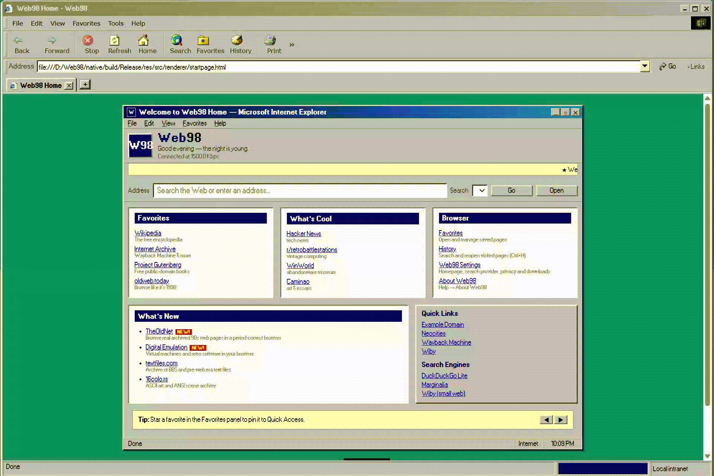

Old-school desktop
Classic window frames, compact controls and a Windows 98-inspired visual language, without pretending the demo is the finished product.
Web98 brings the visual character of the Windows 98 era to a desktop browser project made for today. Familiar chrome, square edges and a little late-nineties attitude.

Web98 is being developed as a desktop browser with a deliberately classic interface. This page is a project overview; the demonstration shows the current state, which may change as development continues.
Classic window frames, compact controls and a Windows 98-inspired visual language, without pretending the demo is the finished product.
Web98 is still in early development. Available features and packaging can change between builds.
Use North Assembly's release page for published builds. Only releases provided through official project channels should be treated as official.
Check the releases page for a downloadable build. If no release asset is available yet, Web98 is not ready to download from that page.
Web98 is an independent project inspired by classic desktop software. Windows is a trademark of Microsoft Corporation. Web98 is not affiliated with or endorsed by Microsoft.